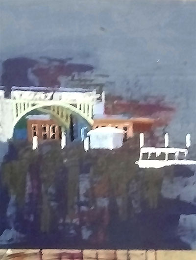
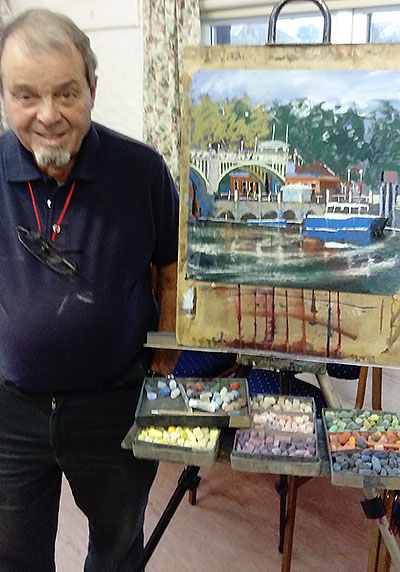

Contents:
- Winter Programme (September-April)
- Summer Programme (May-August)
- Demonstration Programme
- Our latest demonstration
- Our location
Winter Programme (September-April)
Members meet every Wednesday in Ferring Village Hall, 9:30-11:30 A.M.
This year's Winter programme will appear here later in the year! See below for our Summer programme.
| Date | Subject | Homework |
|---|---|---|
| Sep 6th | Create various background pages & collect to work on later | Paint emotions. Strong focal point. Not your usual materials |
| Sep 13th | Use previous sketches, turn into storytelling work on the above | |
| Sep 20th | Portrait model Sarah.Tinted paper, crayon, paint, NOT just pencil | |
| Sep 27th | Paint an emotion. Mixed media, collage, etc. & Take summer sketches and paintings to display & critique | |
| Oct 4th | Dogs, cats, horses and cows. Use one BIG & one little brush | Composition with Animals, BIG brush, little brush technique |
| Oct 11th | Turn the above into semi-abstract painting, work on F.P. | |
| Oct 18th | Dog posing. Big brush, little brush, NOT just pencil please | |
| Oct 25th | Sketchbook keeping. Take your own, exchange ideas and experiment with new techniques and ideas & critique | |
| Nov 1st | The human figure in sport, hobbies, shopping. Use 3 colours | Human figure & Hobbies, create semi abstract design with strong focal point |
| Nov 8th | Christmas paper, print with cork, potato, string on coloured paper | |
| Nov 15th | Make simple Christmas card matching your paper | |
| Nov 22nd | Model drawing, male and female. Bold, cover entire page | |
| Nov 29th | Autumn colours, no white, make them sing. F.P. & critique | |
| Dec 6th | Interior with human figure at night, with lamplight | Interior with Christmas tree |
| Dec 13th | As above but daytime, light streaming through door/window | |
| Jan 3rd | DIY tools, wheels, people and sport composition | Abstract or semi abstr. design of seemingly moving, rotating shapes |
| Jan 10th | Collage of the above in abstract/expressive design; rotating and overlapping the shapes; cut/scissors or otherwise, using coloured paper/mags on cardboard | |
| Jan 17th | ||
| Jan 24th | Dog posing, large sheet, several poses, pastel/charcoal/watercolour | |
| Jan 31st | Ray of light/hope & critique | |
| Feb 7th | Bring beach, woodland and garden objects; pass to neighbours every 15mins | A strange country, fantasy. With lettering? |
| Feb 14th | Using the objects from last week, cut and arrange on board | |
| Feb 21st | Members posing, poster paint, bold, BIG brush, little brush | |
| Feb 28th | A strange country, wall art style, bold, with stencils & critique | |
| Mar 7th | Still life, vase, pots, flowers, fruit. Share. Bold shapes, F.P. | Still life with wax resist technique and strong focal point |
| Mar 14th | The above with wax crayons and ink resist technique | |
| Mar 21st | Nude posing. A5 paper, any material, NOT just pencil | |
| Mar 28th | Easter egg hunting. Watercolour, pen/rigger brush & critique | |
| Apr 4th | Machinery of some type. BIG/little brush, clear focal point | Composition in one colour of different shades and tones |
| Apr 11th | Above in totally red or blue compo, leaning towards other cols. | |
| Apr 18th | Members posing, dress up, scarfs, hats etc. No pencils pls. | |
| Apr 25th | If I could be very, very small or big. F.P. & critique | |
| May 2nd | Outdoor painting begins | |
F.P. Learn to put a clear focal point in all of your work this winter
Work together and exchange ideas in class as much as possible.
Summer Programme (May-August)
Members meet in different locations every week to sketch and paint outside.
See above for our current winter programme!
Demonstration Meetings
Art demonstration meetings are held on the third Saturday of every month at
Ferring Village Hall, 2.30-4:30 p.m.,
and visitors are welcome at these (£4 per meeting).
Demonstration Programme 2017/18
| 2017 | 2017 cont'd | ||
|---|---|---|---|
| Apr 29th | AGM (N.B. MOVED from 22nd) Followed by pastel painting demonstration by Caryl Smith |
Sep 16th | Paul Alcock Cityscape in water-mixable oils |
| May 20th | Liz Seward Landscape in mixed media | Oct 21st | Christine Forbes Semi-abstract in ink and watercolour |
| June 17th | Andrew James Portrait in oils - 2pm to 5pm | Nov 18th | Roger Dellar Portrait in oils |
| July 15th | Phil Madley
From seascape to abstract in encaustic wax In St. Andrew's Church Centre |
||
| July 31st thru August 5th | Annual Exhibition 2017 | ||
| 2018 | |||
| Jan 20th | Rick Holmes Along the Thames in pastel | ||
| Feb 17th | Maggie Treadwell Landscape in acrylics, demonstrating masking, creating texture, glazing and incorporating text | ||
| Mar 17th | Dave White WORKSHOP
Seascape in acrylics 10.30 to 4.30 (overall time) in St Andrews Church Centre. [numbers limited—cost £30 members £35 non-members] |
||
| Apr 21st | AGM |
Our latest demonstration
Rick Holmes kicks off our new year
We were pleased to welcome pastel artist, Rick Holmes, on what was his first ever visit to Ferring. As a member of the Wapping Group, it was no surprise that he chose as his subject a Thames bridge ... how he went about it was more surprising. Working on pre-primed mountboard, he proceeded to apply dark acrylic inks with a roller! Next he used a credit-sized card to apply small marks of Chinese black ink to plot the key elements of his subject. Those watching were relieved when he said "Believe me, pastel will come"!

Rick prefers Unison soft pastels supported by Conte (square edge) and pastel pencils where more detail is required. He tends to blend only the sky areas and applies individual pastel marks across the rest of the painting. One reason for the ink/acrylic background is that this creates the "darks" against which the pastel tones can be best judged. Like so many pastel users, he had a bag load of broken pieces. However, as he chooses colours for the individual painting he keeps them on a separate tray. This helps to keep to a relatively limited palette and create a more harmonious design. Soon the image began to emerge...

Rick had no magical formula for painting ... neither light to dark nor vica versa. Rather, it was whatever seemed most appropriate. His aim was to create a "loose realistic" style, already evident in the emerging painting. When working from a photograph, Rick suggested the use of black and white images to help with tonal values while allowing the artist to be selective over colour choices. However, Rick is a regular outdoor painter and waxed lyrically on the benefits to be gained from regular "plein air" painting. His one caveat was to restrict time to about 2 hours as the sun's movement over a longer period could lead to problems.

With over 30 people attending, there were many questions throughout the demo all answered clearly by Rick aided by his gentle humorous style. To supplement today's painting, he had brought a wealth of previous work for all to enjoy and had time to share several fully-framed works ... wryly remarking that these were the onesnot selected for the latest Pastel Society Mall exhibition - though he does have one in there!

Our thanks to Rick for a super start to our 2018 demos. Don't forget you can see Rick in action again on Monday evening, 26th February at the Mall (painting alongside Roger Dellar and Geoff Hunt) as part of the Wapping Group exhibition at the Mall Gallery.
Click here to see some of our previous demonstrations!
Location of Ferring Village Hall
Address: Ferring Street, Ferring, West Sussex, BN12 5JP
Map:
Click here to see this on Google Maps!